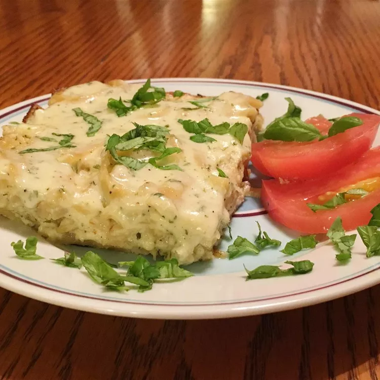

Best Baked Alfredo Spaghetti

Description:
This is an amazingly cheese-rich dish. I love making this to take to friends' homes as a drop off meal.
It gets rave reviews every time! The recipe is adapted from a restaurant in the Mall of America called Tucci Benucch.
I attended the restaurant at a business meeting and they gave us a recipe for the baked spaghetti that I have made a few changes to.
My husband prefers it without the marinara/meatball topping, but if you're looking to stretch the recipe that's a great way to do it.
Ingredients:
- cooking spray
- 1 pound spaghetti
- 1 pound shredded mozzarella and provolone cheese blend
- 2 (16 ounce) jars Alfredo sauce (such as Ragu®)
- ½ cup ricotta cheese
- ½ cup grated Parmesan cheese
- 3 eggs
- 1 (16 ounce) jar marinara sauce, or to taste (Optional)
- 1 (16 ounce) package frozen cooked meatballs, or to taste (Optional)
Steps:
- Preheat oven to 375 degrees F (190 degrees C). Spray a 9x13-inch baking dish with cooking spray.
- Bring a large pot of lightly salted water to a boil. Cook spaghetti in the boiling water, stirring occasionally, until halfway cooked through, about 6 minutes. Drain.
- Stir provolone cheese blend, 1 jar Alfredo sauce, drained spaghetti, ricotta cheese, Parmesan cheese, and eggs together in a bowl. Pour into prepared baking dish. Cover the dish with aluminum foil.
- Bake in the preheated oven until hot and bubbling, 60 to 75 minutes. Remove foil from baking dish and top spaghetti with remaining Alfredo sauce.
- Stir marinara sauce and meatballs together in a saucepan; bring to a simmer, reduce heat to medium-low, and cook until meatballs are heated through, 15 to 25 minutes. Spoon meatballs and marinara over baked spaghetti.